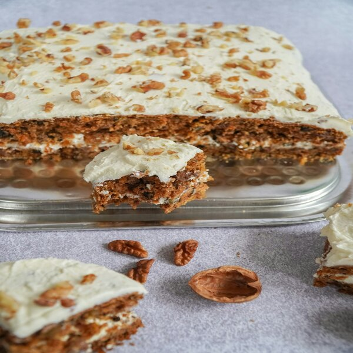
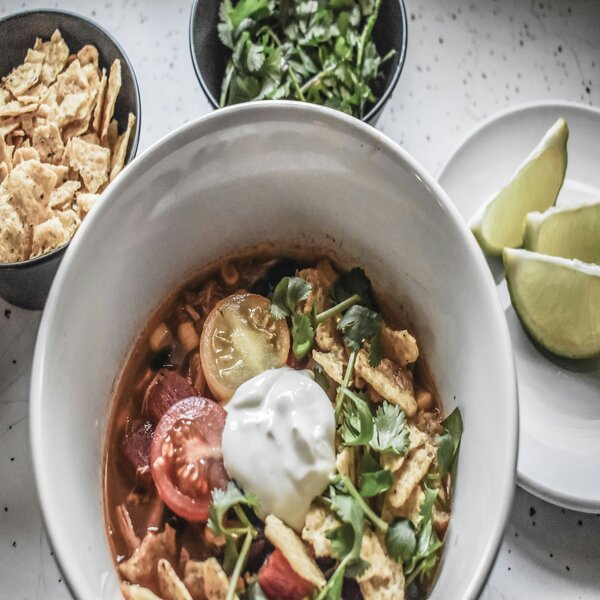
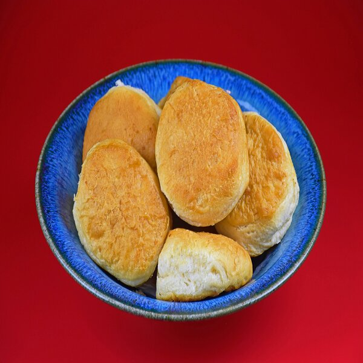

Hello and welcome to the Boice Family Recipies! Here are some recipes from my Mothers side of the family. Some recipies that I ave fond memories of making with my Grandma! I hope you enjoy!

Carrot Cake 1 cup of shortening, 2 cups of sugar, 3 eggs, 2 cups of grated carrots, 1 cup of coconuts, 1 cup of nuts, 1 3/4 cups of pineapple(crushed and drained), 1 Tsp vanilla, 2 Tsp soda, 2 cups of flour, 2 TSP cinnamon, 1 Tsp salt Combine in Order Give. Mix Well and Bake at 350 degrees for 35-45 mins depending on oven. Frosting: 4 oz cream cheese, 1/2 cup of margarine, 1 package of powdered sugar. Mix until smooth and fluffy.

1 1/2 pounds of cooked chicken (3-4 Chicken Breasts), 2 Tbsp onion, 1 Tsp garlic, 14oz crushed tomato, 1 can of corn not drained, 1 can of black beans, 1-2 cans of chicken broth, a bottle(can) of enchilada sauce, 1 Tsp cumin, 1 Tsp Chili powder, 1 Tsp Chopped Chili Pepper. Heat to a boil and Enjoy!
